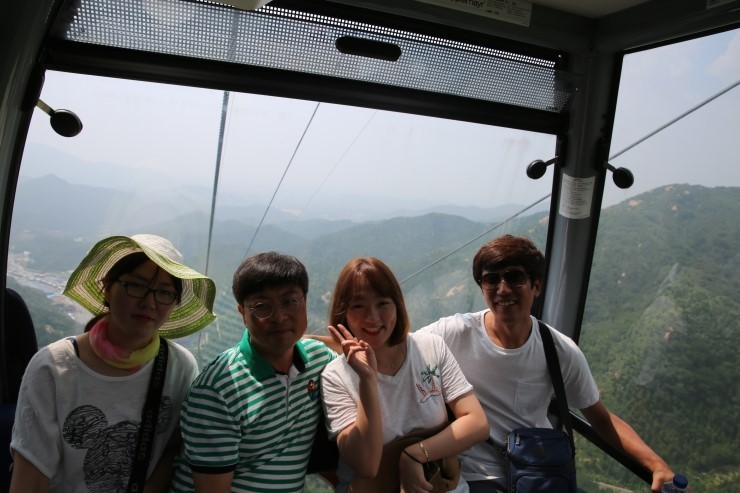
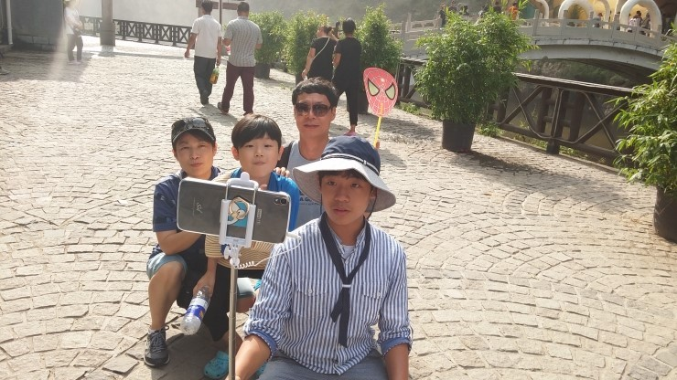

대광그룹 우수사원 및 우수품질분임조 가족동반 해외연수 !!
중국 북경 3박4일 여행이야기

중국 북경 해외연수 셋째날 이야기
벌써 북경 해외연수를 온지 삼일째가 되었네요~ ㅜㅜ
흑흑 시간은 왜이리 빨리가는지....
중국하면 '만리장성' ! 이죠
만리장성을 가기전에 배를 든든히 채우기 위해 먼저 맛있는 음식부터 시작했습니다 ^^
송이버섯탕(금전)
금전은 동시에 천명이상을 수용할수있다는 유명한식당으로
회전용식탁에 송이버섯탕, 동파육 등 보기만해도 입맛돋구는
중국다운 요리가 끝도없이 나왔습니다 ^^
송이버섯탕으로 배를 든든히 채우고~ 만리장성을 만나러 GO~GO~
만리장성
만리장성은 진시황제가 북방의 흉노족의 침입에 대비하여 만든 건축물로
중국인의 오랜역사와 대륙의 힘을 느낄 수 있는
정말 어마어마한 건축물이었습니다~
케이블카를 타고 만리장성 보러 갑니다~~~~ㅎ
케이블카를 타기위해 제법 긴시간을 대기했지만~
만리장성을 본다는 기대감에 힘듬도 견딜만 했어요~~


만리장성이 보입니다~ 
정말 대단하죠 !!
만리장성을 기념하며~
단체 사진도 찰칵 ! 
사장님! 넘 다정하신거 같아요~~~~ 
용경협
용경협은 북경 4대명소중의 하나로 뽑히는 거대호수입니다~




푸르른 신록과 가파른 봉우리들이 이루는 절경을
이색적인 유람선으로 관광하니 자연깊숙한 곳에
들어간듯한 황홀함을 느낄수 있었습니다. 
유람선에~
떡 하니 대광판넬 해외연수 현수막도 걸고 ^^ 
 이것이 대륙의 웅장함이겠죠~~
이것이 대륙의 웅장함이겠죠~~
자연과 하나된 느낌입니다~~~ 황홀~황홀~~
만리장성과 용경협을 쒼나게~보고나니 어느덧 밥 타임 ㅎ
훠궈(하이디너)
중국에 왔는데 샤브샤브를 빼놓을순 없겠죠~~
들어서자 마자 길목에 수십명이 대기하고 있었지만
우리는 VIP답게 ^^ 예약석이 기다리고 있었습니다~
바로 편하게 식사시작 ! 
셀프바에 각종 소스와 과일 그리고 야채가 무한리필이며
매운육수와 부드러운 육수 두가지를 같이 먹을수있어 이색적이었고,
음악을 맞춰서 직접 수타면을 뽑아주는 퍼포먼스도 감상할 수 있었어요~ 
심지어 ㅎ
화장실에서 나와 손을 씻으면 직원이 휴지를 들고 대기하고
있을정도로 친절한 명품 식당이었습니다
어제 갔던 독일 맥주집 또 방문 !
역시나 분위기좋고, 술맛좋고, 마지막날 밤이라는게 아쉬웠습니다. ㅜㅜ 
맥주마신후 돌아가는길에
밤에 찍어본 호텔~ 마지막 밤이라 더 아쉬웠답니다.